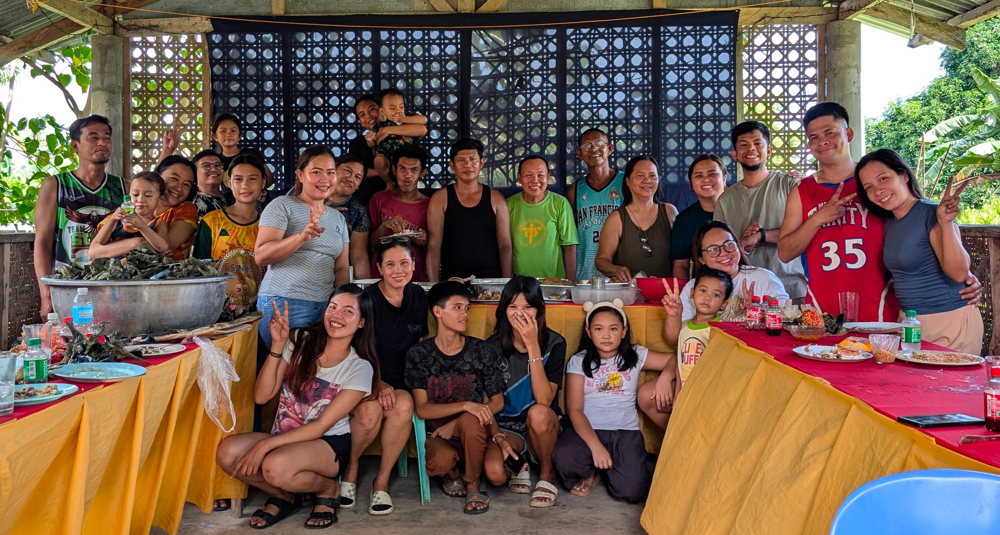

Si Kap Binoy nibiya ning tawhanong kalibutan niadtong Nobyembre 29 sa edad nga 58.

Usa ka kugihan nga public servant, si Kap Binoy nagsilbing Kapitan sa Barangay sukad sa 2013.

Bisan pa sa pag-atubang sa sakit sa kidney sukad 2016 ug sa regular nga dialysis treatment, si Kap Binoy wala mag-undang sa pag-alagad sa iyang mga kauban sa barangay.

Dugang pa sa iyang pagserbisyo, si Kap Binoy usa usab ka maayo nga amahan, apohan, ug igsoon sa iyang pamilya.

Hinumduman nato si Kap Binoy sa iyang pagkamahigugmaon sa iyang pamilya, sa iyang pagkamahigugmaon sa iyang komunidad, ug sa iyang pagkamahigugmaon sa Diyos. May his soul rest in peace.